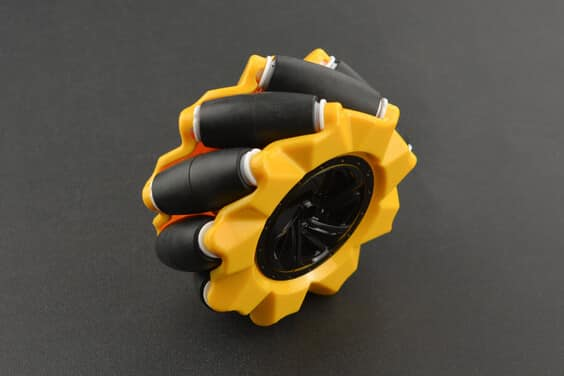
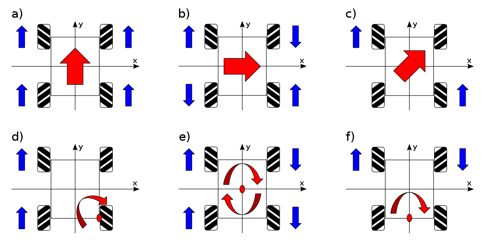
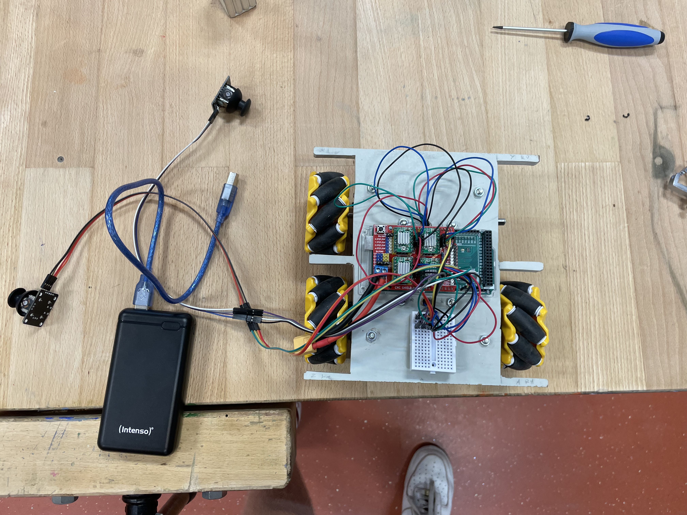
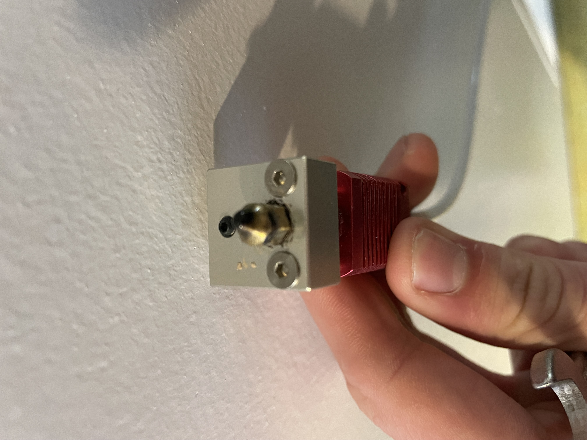
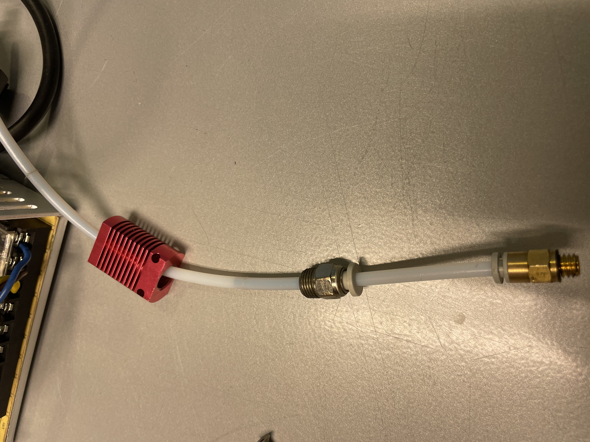
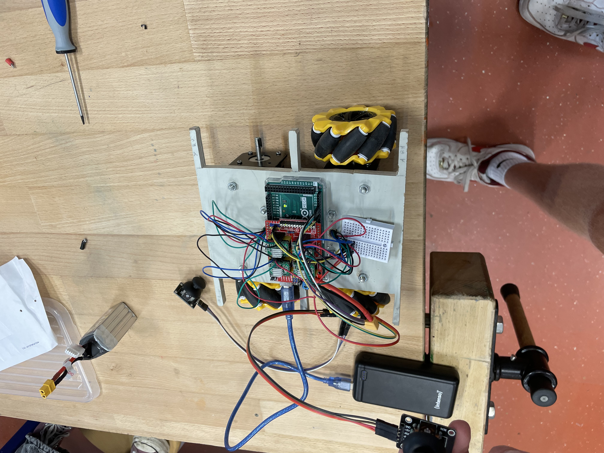
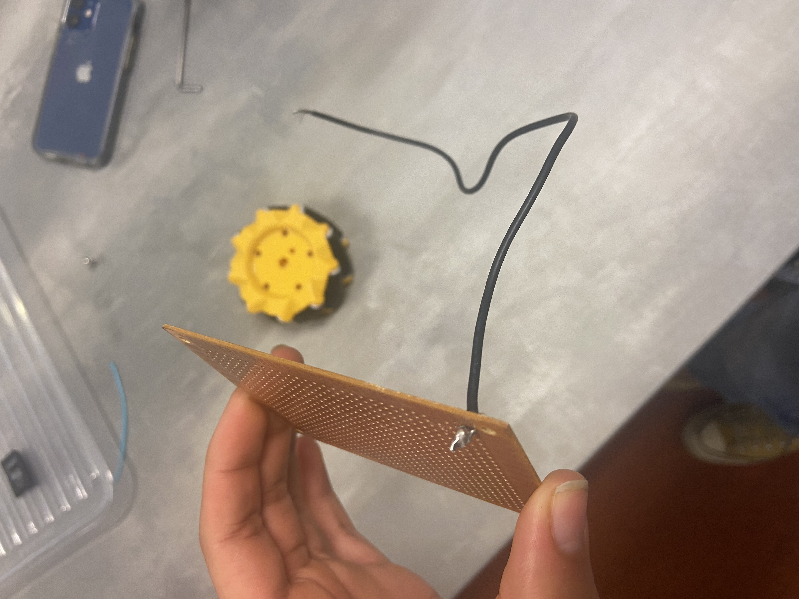
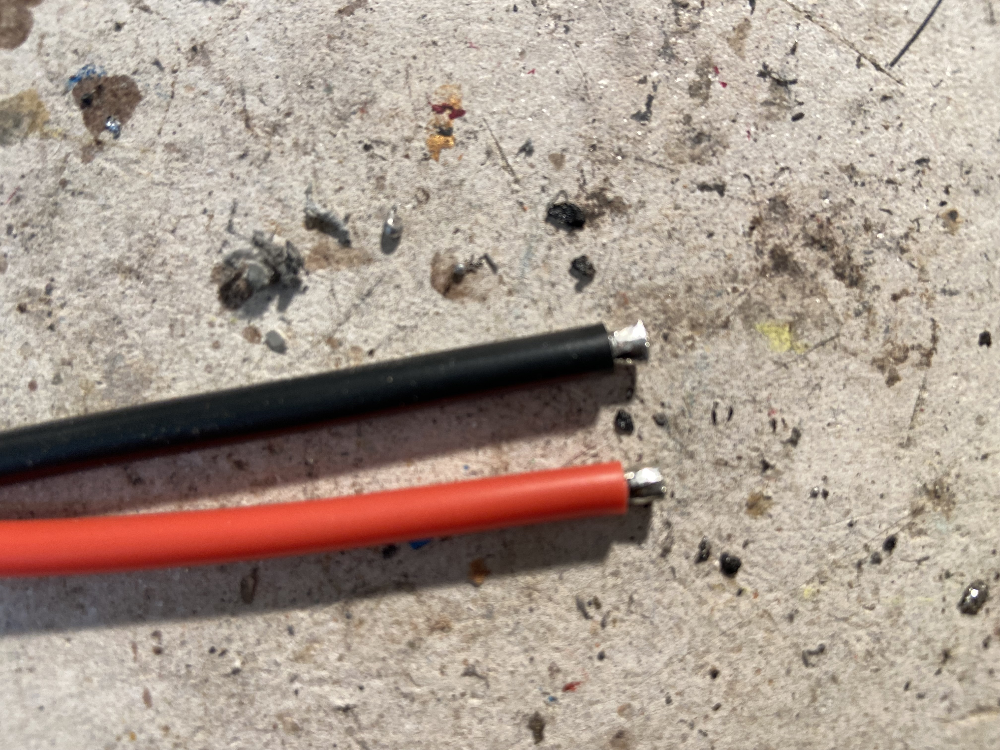

The selfdriving car that aint ridin'
Ons idee is een auto die uit zichzelf een doolhof kan oplossen. Dit willen we gaan doen met acht afstandssensoren die constant de afstand tot de muren meten zijn. Met deze informatie kunnen we een richting bepalen die de auto op moet gaan (door middel van berekeningen). De auto zelf heeft 4 steppermotors waardoor we de auto heel precies kunnen laten bewegen. Aan de motoren zitten zogenaamde “mecanum” wielen. Dit zijn wielen met rollers erop die 45° graden gedraaid zijn ten opzichte van de wielas (zie de linker afbeelding). Deze wielen zorgen ervoor dat de auto alle richtingen op kan rijden (rechter afbeelding geeft aan hoe). Ook willen we de auto op afstand bestuurbaar maken door middel van een Playstation 4 controller te gebruiken zodat we hem ook zelf kunnen besturen.

In periode 1 hebben wij vooral veel plannen gemaakt en dingen ontworpen. Wij hebben deze periode dus ook veel
onderzoek gedaan naar welke onderdelen wij nog moesten bestellen. Wij kwamen tot de conclusie dat de arduino
mega met een cnc shield de beste oplossing was voor dit project. De arduino mega heeft genoeg pins om een cnc
shield met alle motor drivers eropaan te sluiten en mogelijk nog wat extra pins over voor andere toevoegingen
zoals een joystick of sensoren of een lampje. Wij hebben ook gekozen om stepper motors te gebruiken omdat er
al 4 van deze op school waren en dit zijn goede precieze motors. Wij wilden ook dat de auto gemakkelijk te
besturen was dus kozen wij voor mecanum wielen. Deze wielen kunnen in elke richting gaan als je de motoren
goed op elkaar afstemt. In deze periode hebben wij dus veel geleerd over de toepassingen en de werking van de
producten die wij gekocht hebben en wij zijn in deze periode nog niet tegen veel problemen aangelopen.
In periode 2 zijn wij vooral bezig geweest met 3D-printen. Wij hadden een bepaalde aansluiting nodig voor de
wielen op onze motoren. Deze konden wij niet online vinden dus hebben wij besloten dit te ontwerpen met een
3D-printer. Wij hebben het ontwerp gemaakt in het programma Fusion 360. Hiermee konden wij heel nauwkeurig
ontwerpen maken die precies passen, maar toen wij naar de 3D-printer gingen lukte het printen niet. Wij hebben
een verstopping gevonden in de slang en die hebben wij verholpen. Toen we daarna opnieuw wilden printen werkte
de printer nog steeds niet, toen hebben wij de hele printer uit elkaar gehaald en elk onderdeel getest en het
bleek dat 1 motor het niet goed deed omdat er in het moederbord een kabel was losgekomen, die hebben wij weer
gemaakt en de 3D-printer weer in elkaar gezet en toen hebben wij onze eerste versie van de aansluiting
geprint. Wij hebben in deze periode dus veel geleerd over de 3D-printer en het ontwerpen van een 3D-design. De
problemen waar wij tegen aan liepen was een niet werkende 3D- printer, maar dit hebben wij opgelost en hebben
hier in de volgende periode verder mee gewerkt.
In periode 3 hebben wij een eerste versie van onze code gemaakt. Deze code was niet heel complex en het was
eigenlijk gewoon een programma dit telkens herhaald werd. Met deze code werden alle 4 de wielen tegelijkertijd
aangestuurd om naar voren te rijden. We hebben ook getest met de motoren tegelijkertijd een andere kant op te
laten draaien, dit werkte ook. Het doel van deze code was om te testen of we alle motoren soepel
tegelijkertijd konden laten draaien en in verschillende richtingen. Ook hebben wij een houten ontwerp van het
frame gemaakt en de wielen hierop aangesloten. De auto kon nog niet ver rijden omdat hij de hele tijd zat
aangesloten aan een grote laboratoriumvoeding die wij van de natuurkunde docent mochten gebruiken. In periode
4 zijn wij opzoek gegaan naar een oplossing voor dit probleem en om hem draadloos te maken. Verder zijn wij
nog door gegaan met het ontwerpen van aansluitingen. De eerste paar versies waren te krap voor de motor en
braken telkens af als we ze op de motor drukten. Ook bleek het dat ze niet genoeg grip hadden op de motor en
dat ze niet aan de as bleven zitten. De oplossing voor dit hebben wij in periode 4 gevonden. In deze periode
hebben wij dus veel geleerd over de code van een stepper motor en we zijn tegen een paar problemen aan gelopen
die wij in de volgende periode hebben opgelost.
In periode 4 beseften wij dat onze oorspronkelijke ideeën iets te hoog gegrepen waren. Wij hebben daarom besloten om de auto niet meer zelfrijdend te maken maar te besturen met een joystick. In deze periode hebben wij een compleet werkende code gemaakt voor de joystick. Om het probleem van eerder op te lossen met de 3D-printer hebben wij besloten lijm te gebruiken tussen de aansluitingen en de assen. De lijm die wij gebruikten bleef helaas niet goed zitten en wij hebben het verder werken met de wielen geschrapt. Ook hebben wij een lipo batterij besteld voor de arduino. Deze zou genoeg stroom moeten leveren om hem te laten werken. Verder zijn wij in deze periode vooral bezig geweest met het blog maken in html dat je nu ziet. In deze periode hebben wij dus vooral de puntjes op de i gezet en onze doelen wat aangepast. De problemen waar wij tegenaan liepen waren het niet werken van de aansluiting en tijd te kort.
Onze resultaten zijn:
/*joystick pins*/
int Pin0 = A8;
int Pin1 = A9;
int Pin2 = A10;
int Pin3 = A11;
/*motor pins*/
#define EN 8 // enable pin for all stepper output
#define X_DIR 5 // direction-pin for X-axis
#define X_STEP 2 // step-pin for X-axis
#define Y_DIR 6 // direction-pin for Y-axis
#define Y_STEP 3 // step-pin for Y-axis
#define Z_DIR 7 // direction-pin for Z-axis
#define Z_STEP 4 // step-pin for Z-axis
#define A_DIR 13 // direction-pin for A-axis
#define A_STEP 12 // step-pin for A-axis
/*snelheid van de auto, 1 is max snelheid*/
int Speed = 1;
/* array voor info joysticks */
/* 0 = x1, 1 = y1, 2 = x2, 3 = y2 */
int Joystick[4];
/*0 = rv, 1 = ra, 2 = lv, 3 = la
som van richtingen(uiteindelijke richting) */
int WheelDir[4];
/* hoeveelheid richtingen voor de joystick*/
int NumDir = 4;
/*4 is check, 0 tm 3 is voor motoren zoals boven aangegeven, is voor de loops die de motoren gebruiken om te draaien*/
int PreviousMillis[5];
int CheckInterval = 250;
int MotorInterval[4];
void setup()
{
Serial.begin(115200);
/* pins instellen*/
pinMode(Pin0, INPUT);
pinMode(Pin1, INPUT);
pinMode(Pin2, INPUT);
pinMode(Pin3, INPUT);
/*motor pins instellen*/
pinMode(EN, OUTPUT);
pinMode(X_DIR, OUTPUT);
pinMode(X_STEP, OUTPUT);
pinMode(Y_DIR, OUTPUT);
pinMode(Y_STEP, OUTPUT);
pinMode(Z_DIR, OUTPUT);
pinMode(Z_STEP, OUTPUT);
pinMode(A_DIR, OUTPUT);
pinMode(A_STEP, OUTPUT);
}
void loop()
{
int CurrentMillis = millis();
/*loop voor de input van de joysticks omzetten in snelheden van de motoren */
if (CurrentMillis - PreviousMillis[4] >= CheckInterval) {
PreviousMillis[4] = CurrentMillis;
/* zet de output van de joystick om in x en y directies */
Joystick[0] = (-map(analogRead(Pin0), 0, 1023, -512, 512))/(512/NumDir);
Joystick[1] = (-map(analogRead(Pin1), 0, 1023, -512, 512))/(512/NumDir);
Joystick[2] = (-map(analogRead(Pin2), 0, 1023, -512, 512))/(512/NumDir);
Joystick[3] = (-map(analogRead(Pin3), 0, 1023, -512, 512))/(512/NumDir);
/* loop voor alle dingen die met de motoren en snelheden daarvan te maken hebben*/
for (int i = 0; i < 4; i++) {
WheelDir[i] = ConstrainSpeed(CalcDir(i), i);
if (WheelDir[i] != 0) {
MotorInterval[i] = abs(NumDir / WheelDir[i]) * Speed;
} else {
MotorInterval[i] = 0;
}
}
/* print de output van de joysticks */
Serial.print(" x1: ");
Serial.print(Joystick[0]);
Serial.print(" y1: ");
Serial.print(Joystick[1]);
Serial.print(" x2: ");
Serial.print(Joystick[2]);
Serial.print(" y2: ");
Serial.println(Joystick[3]);
/* debug */
Serial.print("-"); Serial.print("---"); Serial.println("--");
Serial.print(WheelDir[1]); Serial.print("| |"); Serial.println(WheelDir[0]);
Serial.print("-"); Serial.print("---"); Serial.println("--");
Serial.print(WheelDir[2]); Serial.print("| |"); Serial.println(WheelDir[3]);
Serial.print("-"); Serial.print("---"); Serial.println("--");
Serial.print("-"); Serial.print("---"); Serial.println("--");
Serial.print(MotorInterval[1]); Serial.print("| |"); Serial.println(MotorInterval[0]);
Serial.print("-"); Serial.print("---"); Serial.println("--");
Serial.print(MotorInterval[2]); Serial.print("| |"); Serial.println(MotorInterval[3]);
Serial.print("-"); Serial.print("---"); Serial.println("--");
}
/* zorgt ervoor dat de motoren in de goede richting draaien */
if (WheelDir[0] > 0) {
digitalWrite(Y_DIR, LOW);
} else {
digitalWrite(Y_DIR, HIGH);
}
if (WheelDir[1] > 0) {
digitalWrite(X_DIR, HIGH);
} else {
digitalWrite(X_DIR, LOW);
}
if (WheelDir[2] > 0) {
digitalWrite(Z_DIR, HIGH);
} else {
digitalWrite(Z_DIR, LOW);
}
if (WheelDir[3] > 0) {
digitalWrite(A_DIR, LOW);
} else {
digitalWrite(A_DIR, HIGH);
}
/* laat de motoren draaien met de goede snelheden */
if (WheelDir[0] != 0) {
if (CurrentMillis - PreviousMillis[0] <= MotorInterval[0]) {
digitalWrite(Y_STEP, HIGH);
} else {
digitalWrite(Y_STEP, LOW);
PreviousMillis[0] = CurrentMillis;
}
}
if (WheelDir[1] != 0) {
if (CurrentMillis - PreviousMillis[1] <= MotorInterval[1]) {
digitalWrite(X_STEP, HIGH);
} else {
digitalWrite(X_STEP, LOW);
PreviousMillis[1] = CurrentMillis;
}
}
if (WheelDir[2] != 0) {
if (CurrentMillis - PreviousMillis[2] <= MotorInterval[2]) {
digitalWrite(Z_STEP, HIGH);
} else {
digitalWrite(Z_STEP, LOW);
PreviousMillis[2] = CurrentMillis;
}
}
if (WheelDir[3] != 0) {
if (CurrentMillis - PreviousMillis[3] <= MotorInterval[3]) {
digitalWrite(A_STEP, HIGH);
} else {
digitalWrite(A_STEP, LOW);
PreviousMillis[3] = CurrentMillis;
}
}
}
/* functie voor berekenen richtingen*/
int CalcDir(int i) {
int Move;
int Turn;
int Sum;
if (i == 0 || i == 2) {
Move = Joystick[0] + Joystick [1];
} else {
Move = Joystick[1] - Joystick [0];
}
if (i == 0 || i == 3) {
Turn = Joystick[2];
} else {
Turn = -Joystick[2];
}
Sum = Move + Turn;
return Sum;
}
/* zorgt ervoor dat de snelheid van de motor niet boven de maximale snelheid kan komen */
int ConstrainSpeed(int i, int k){
for (int j = 0; j < 4; j++) {
if (abs(CalcDir(j)) > 2*NumDir) {
i = CalcDir(k)/4;
}
else if (abs(CalcDir(j)) > NumDir) {
i = CalcDir(k)/2;
}
}
return constrain(i, -NumDir, NumDir);
}
/*Code voor het testen van de Bluetooth Module "HC-05"*/
#include
SoftwareSerial Hconnect(2, 3); // RX | TX
int flag = 0;
int LED = 8;
void setup()
{
Serial.begin(9600);
Hconnect.begin(9600);
pinMode(LED, OUTPUT);
}
void loop()
{
if (Hconnect.available())
flag = Hconnect.read();
if (flag == 1)
{
digitalWrite(LED, HIGH);
Serial.println("LED On");
}
else if (flag == 0)
{
digitalWrite(LED, HIGH);
Serial.println("LED Off");
}
} Volledige auto (1 wiel mist door niet gelijmde as)
Volledige auto (1 wiel mist door niet gelijmde as)
3D-Printer Hot end verstopt
Extruder tube verstopt ten gevolge van verstopte hot end
Volledige auto (1 wiel mist door niet gelijmde as)
Custom shield test.
XT60 connector kabel te dik. Oplossing: zelf strippen
